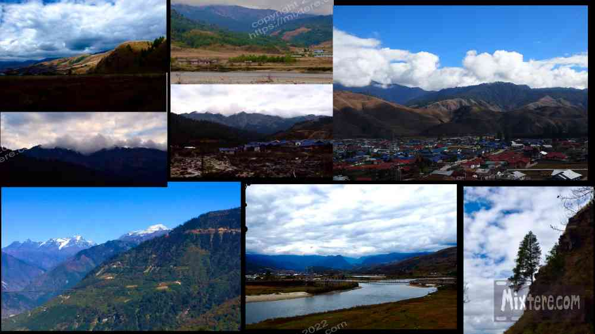
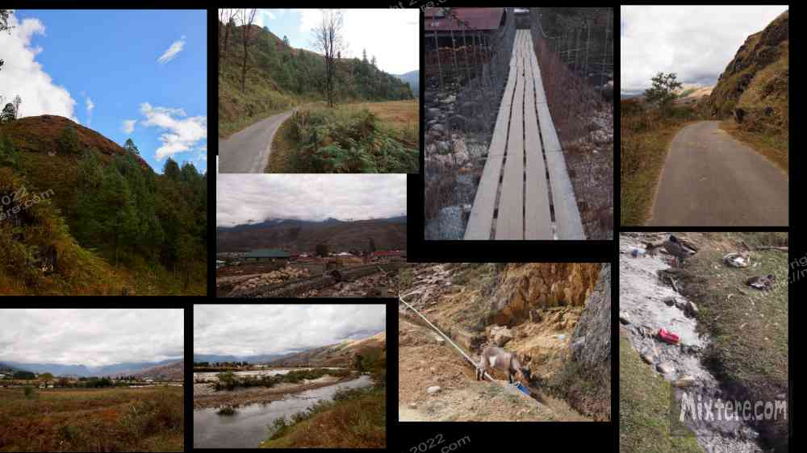
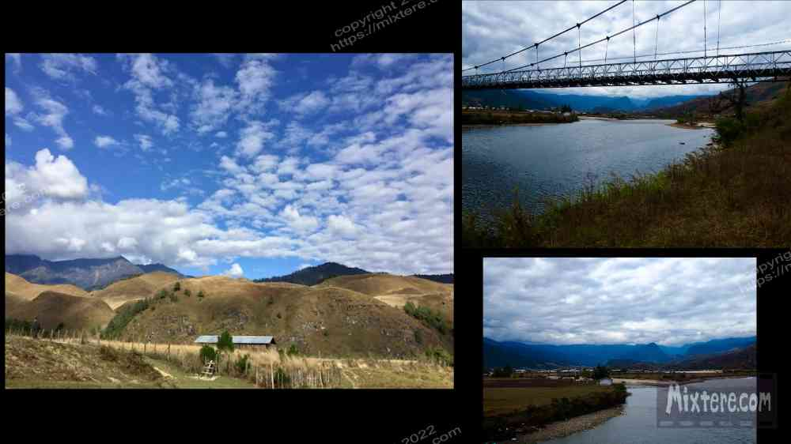

As I mentioned, Mechucka village is a somewhat mystical destination nestled in the mountains of Arunachal Pradesh just south of Tibet. Among many people- regular Indians, Indian tourists and foreign visitors, Mechucka village holds a status as a difficult and coveted travel destination. It was not easy or convenient for a foreigner like me to get the Protected Area Permit required for entry. And as was evidenced by the jealous geologists in Aalo, information about traveling to these areas was often unavailable or outdated at the time of the journey (2019). But my stubborn self was bent on visiting this little outpost. I had been patient and perhaps lucky in my quest. Mostly, it was the help of my airbnb host in Guwahati, Hironmoy, that made my entry into Arunachal Pradesh and Mechucka a reality.
As I had eliminated the expensive roll of the dice that was a flight or helicopter trip to Mechucka, I was headed again for the shared jeep. After my first few beatings in Sumos I did reconsider taking the night bus. But there were too many stories of bus crashes, and too many skeletal remains of busses in the ravines along the road to back these stories up. So again I found my six foot two inch frame pretzeled against the gearshift, the dashboard, the driver and ticket-dispenser. It is a medieval way to travel. In a now memorized movement I would swivel my whole body sideways with each shift, my knees clunking against my chin and dash.
It wasn't long before we were gaining some altitude. Below the hillsides were ultra-steep; the road threatening collapse around every muddy corner. With the elevation gain the thickly-forested woodlands had given way to what I would call alpine scree, although we were not above the tree line. Looking down, I was often visited by the thought of what I might do if the jeep were to suddenly launch off the road. I imagined that I would somehow manage to jump from the jeep in mid-air and to grab onto a tree trunk in mid-air. I had seen Lee Majors escape an avalanche by doing this in “The Fall Guy.” So because I saw it on tv, I knew it could work since I saw Lee do it! Then came the next recurring thought... If I were to somehow survive, how would I make it back up the 1000 vertical feet to the road? The jungle was thick and hillside extremely steep. I never came upon a plan of action for this. Imagined encounters with snakes or monkeys or bears always stalled me. Yes, bears are a danger here. Thankfully the jeep stayed mostly on the road and I never had to test my plan to cheat death.

Toward the end of the ride the jeep descended, then ascended and exited the lush jungle. Then for a while it cruised the rolling grassland of the high country valley. The grass was dry and straw-colored- desiccated by a summer of alpine sun and brisk wind. The valley before us opened up and soon little ranches and homesteads were visible. They were on the plains or perched on the ridges of the surrounding hills. Thatched roofs, rough unfinished log structures, occasional corrugated sheet metal. There was about twenty minutes of motoring through these sort of vistas. And then... we arrived.
It was a surreal moment, Mechucka, three days and three Sumo trips in the making. I staggered out of the jeep and went about removing my gear from the roof. That done, I tottered on my feet under the load for bit. The rough knocks of the road and sporadic meals had worm me down. My head was spinning and I was trying to decide what way to go. Again I had made no advance booking. And sadly my trusty phone was of no use in Mechucka Village. At that time the only available network was an Indian military one that was off limits to me. So I headed off up a hill populated with some large buildings. I figured one of them was a guesthouse. Then I sensed that they were apartments. I turned around and made a tac toward the river.
I was discombobulated, the air was cold and I was getting a lot of stares from people. I heard people uttering the word ”foreigner” as I loped along. This last one was pretty unnerving.Additionally, it was confusing as I was trying to get my bearings in what was a very sparse downtown whose layout didn’t make any sense. I tried the tactic of asking locals about a “guesthouse.” It did not bring about anything other than puzzled expressions on their mongoloid faces looking faces, aversion from eye contact and more utterances of the word “foreigner.” The air was dry and the afternoon light displayed the sky as pale blue with a burnt tinge. This was probably just a reflection of all the brown grass. In my chest I sensed the gain in elevation that the jeep had made over the last eight hours. The high-altitude sun peeked through some lingering haze and provided a little warmth.
I needed a place to stay. But first, I needed a proper meal. Again the jeep had left at the crack of dawn and again I had not had anything proper that morning or for lunch. I was famished, sore, exhausted, disoriented and alone, with fifty pounds on my back. The realization hit again that I was in fact not the rugged Indiana Jones explorer I had imagined I might be. Still, I did my best to present a confident grin and pressed forward like I knew where I was going. I’m quite sure the locals knew otherwise.
I continued lumbering down the gradual hill toward the river, recrossing the intersection I had just been to. I turned down a lane of dusty, shabby shops, seeking a safe place to eat. Nothing looked good... or clean. I decided to try a shack with a greying sign that said “restaurant” in dilapidated script. Immediately upon entering the shack I sensed it was a bad decision. A man a very dirty shirt greeted me with desperation. I said something about lunch and the man nodded and disappeared into what I guess you could call the kitchen. I took the opportunity to leave before he came back.

I wondered closer to the river but saw nothing remotely resembling an eating establishment. My spirits were sinking. It didn’t look like a meal was in the cards. Thankfully I had chips and snack food in my bag. It was junk food but at least it was some sort of fuel. My approach is that it is often better in the long run to avoid suspect food or drink and go without than to take the risk of getting sick, especially in a place like this. Way up here I tried to not roll the dice with food poisoning or worse. The salty chips and white flour crackers were hard to choke down. I searched for my water bottle. I then shifted focus to finding a place to stay.
I continued along the lane toward the river. I approached an area with a large army base to my left and a residential section to my right. I spotted what looked like a guesthouse and investigated. It was indeed a guesthouse and a pretty nice one at that. I looked around and called and knocked on a few doors. There was no one around to answer. I puzzled for a minute. A cat popped by to say hello. I decided to sit and snack while I waited for someone to show up. After about twenty minutes of waiting I began to feel too uncomfortable lingering on the property. I headed back up the lane a bit and noticed again a group of army men that I had seen lingering in front of the house next door. I called to one of them to ask about a guest house. A kind older gentleman responded. He had a few days beard and a wool hat on against the alpine cool. I sensed a kindness in his demeanor. He urged me to wait at the guesthouse, saying that someone would be there shortly. I asked him about a place to eat and he looked puzzled, frustrated that he did not have a ready solution for me. This was obviously a residential area for members of the Indian military, not an area designed to suit the needs of a wandering backpacker.
I thanked him and went back to the property to await the guesthouse owners. In time the man in the hat came back over and chatted with me a bit. He invited me to eat with him in the officer’s mess. How could I refuse such a gracious offer? After waiting a bit I followed him in to the tent that he shared with another officer. Inside there was little inside except the basics. I marveled that here two grown military officers lived, ate, groomed, and slept the best they could. It was a spartan arrangement that brought fresh awareness of the privilege I had come from.
My host introduced himself as Robinson. He was a devout Christian man from Punjab. We chatted a bit and he treated me with gracious hospitality as his special guest. In a few minutes we moved to the “officer’s mess.” It was not much other than a drafty and rudimentary tent with a fire-pit in the middle. Robinson led me to the back where a spigot was so we could wash before eating. That done we returned to the “mess” and were soon handed plates of lentils and chapati and a small pile of subji (green vegetable). The food was cold but I accepted it graciously. We continued to talk, him seeking for answers to the question of what had brought me there and whether I was a god-fearing man. When I explained my Buddhist roots and my desire for spiritual freedom, he did not press or prosthletize. I deeply appreciated this.
Robinson had the buoyancy of youth and of an enthusiastic and deeply committed faith. He used the word god a lot but always with sincerity. He even intimated that I, wandering in from the street, might be god. The only right thing was to feed me. This is the “guest is god” belief that I referred to earlier. I was deeply honored by Robinson's gesture and truly appreciated his warm smile and hospitality, especially after the long jeep ride. However, soon our little food break came to an end and we said our goodbyes. Robinson had to go back to work. So I went back to waiting at the guesthouse. Little could I have known that I had just met a gem of a man that I would be in regular contact for the remainder of my trip. Robinson would prove to be supportive in the difficult times to come.
When I returned to the guest house I did not have long to wait before one of the proprietors arrived. In broken English we communicated and I agreed to her very high price for accommodation and a meal for that night. She opened up one of the units for me and it was quite nice. I began unloading my things immediately. The place was above my target budget but I was desperate and just happy to have a clean place to rest. The mother went away, signaling that she would return with a dinner for me at seven that evening. Relieved, I unpacked my things and showered. I then went on a quick walk of the town to get my bearings before evening fell. I decided to explore the outer reaches of the town and turned right into one of the modest residential lanes. I came upon a sign with an arrow pointing to a homestay. Intrigued, I followed the arrow and was soon at the gates of what I guessed to be the place. A boy of about 12 was in the courtyard and I requested to him in broken English that I was interested in the guesthouse. He nodded comprehension and ducked into the house. A few moments later a man came out to greet me and give me a tour. The first spot he showed me was basically a uninsulated shed whose windows had no glass against the alpine air. The proprietor then led me inside the house to show me a couple of other options, a small and then a larger room. It was all pretty rustic but it was much cheaper than the place I had found. I thanked the man and told him I had found a place for the night but would return the following day. As I walked back I reflected on how uninformed I had been regarding traveling in these parts. Out here in the hinterlands prices were high and the budget would have to be abandoned.
Happy with my discovery of the guesthouse I walked back to where I was staying. I was even almost not bothered by the wide berth locals were giving me or the stares and whispers about the foreigner that they sent to their friends as if I could not hear. When I returned to my little room at the plush guest house I laid down for a rest. About two hours later a knock came at the door. I opened it and was greeted by the younger daughter of the proprietor and what seemed to be her husband. They informed me quite rudely that the room was reserved for the night and that I would have to vacate immediately. Welcome to Mechucka. They insisted that they would arrange alternative accommodation. A taxi came and I was ushered into it. Ironically, the taxi driver was the proprietor of the guest house I had visited on my walk. My new host drove about two blocks and then stopped at one of the roadside shacks. Apparently it was his sister’s restaurant. It was now dark, I was exhausted and it was starting to get late. I had no options but to just trust the man and wait for him to deliver us to the guest house. He made another stop at the “grocery store” where I waited some more. When we finally arrived at the guest house it was pitch black. My heart plunged. The host shared that the neighborhood was experiencing an electrical blackout. That meant no hot water, among other things. At that point I bargained the man down on his price a few hundred rupees. Then I settled in to the dark room for the night.
The next day the weather was cold and cloudy... and so was I. My body had been taking a beating trying to remain running healthy given the conditions I was putting it through. The host had hot water brought in by the potful, having been heated on the wood fire burning in the courtyard. This was a nice gesture. I marveled that, surrounded by the amenities of the hot water heater, electric lights and flat screen tv’s, I was living via natural light and burning wood. Again, I hadn’t anticipated how rugged things would be.
The next day I was feeling better and inquired about finding a guide to take me around the area. I was shocked to hear the proprietor’s quote of 50 US dollars per day to hire a car. Before you readers scoff please keep in mind that it is usually entirely feasible to live in India on $15-20 per day or less. Yet here it was going to cost almost three times that just to cover taxi costs. This is an astronomical rate for the budget traveler. I decided that I would go without the hired car. I had made such an effort and paid such an expense to get to Mechucka, it was ironic that I could barely get beyond the confines of the town without spending the equivalent of a week’s budget for a single day of sight seeing. I had already overpaid the special “foreigner rate” for the jeep rides and just didn’t want to shell out more. I decided I would walk where I could and see what I could see. By this point it was clear that Mechucka was not going to seduce me with its charm.
So I started walking. It was mid November and just about the time for winter to start hitting Mechucka Village. The area was beautiful but fell far short of all the expectations I had built. Additionally, the sizable army base in the middle of the town was not something that any of the websites or guidebooks had mentioned. It was an eyesore. The town built around it was nothing to make one smile at either. It was all utilitarian modern structures with colored sheet metal and no traditional design, materials, feel or sense of place to the development. Absent was any of the charm or sense of culture and history that one learns to expect from traveling India. The mountain streams that plunged below the famed “hanging bridges” of the area were full of plastic trash, cans and broken bottles. Some of the river rocks even featured graffiti. My tourist fantasy of Mechucka was rapidly falling apart. And with the exception of Robinson (who was actually a Punjabi and not a local of Arunachal Pradesh), everyone that I met came across as curt and rude. I can only conclude there there was an insurmountable cultural divide between us. I experienced very little kindness as I plodded along the roads. The term “foreigner” echoed from mouths behind my back everywhere I went. I began to wonder just what I had gotten myself into. Fortunately this was soon to change.
I had seen a bridge that went across the river and up into the mountains and away from the sprawl of the city. I decided to head for that. Upon hitting a junction I wasn’t sure how to get to the bridge. I saw a Tibetan-looking man getting out of his car across the street. I politely asked him for directions to the bridge. Surprisingly he replied willingly with precise directions in perfect English. I thanked him profusely for taking the time to help me. I turned and began walking when he invited to take me across in his car. I could sense clearly that he had nothing up his sleeve. Once I got in he extended his offer to include a trip up into his home village. I could not believe his generosity. I insisted that I did not want to trouble him but he insisted that it was no trouble. I sensed kindness in him and the desire to share his home with the visitor. I could not believe this stroke of good luck, coming at a time when my traveler morale had been sinking to a new low.
We whisked into the mountains in his little sedan. Very soon the unflattering sprawl of Mechucka disappeared and was replaced with beautiful hilly grasslands and traditional homes of wood and thatch roofs. He took me to his village, whose name escapes me. Then we went to the local stupa that I believe his family helped build and maintain. The local Bhante or Abbot of the temple welcomed us graciously. Having studied Buddhism for many years and visited many temples, I found the place soothing. The little spot was pristinely kept and quite beautiful. The grounds were richly planted with fruit trees. The golden grass of the surrounding hillsides swayed in the fall breezes with declarations of winter’s approach. My host showed me an oven on site that was used to offer bread to the gods. He shared the community’s conclusion, that if people liked bread then the gods must as well. It might seem odd to be talking about gods and offerings at a Buddhist Stupa but this is a common thing with Mahayana Buddhist practices in the north. Many years ago, when Buddhism was brought to the land via India, it mixed in with the Bon (animist) beliefs that permeated the land. And so you find things in these areas that you do not encounter with Theravada Buddhists of say, Sri Lanka or Thailand.
I admired the “bread-offering oven” (pronounced "Songun") and stepped up to the large prayer wheel set up behind it. With my host’s permission I gave it a spin. It tinkled bells as it sent multiple “Om mani Padme Om”’s up to the heavens in the process. Then the abbot welcomed us into the temple and we gave it a brief but respectful tour. I made a small donation next to the alter. My host and guide was a teacher. Having done this work myself, we talked about schools and community. It turned out the man was a very large and active figure of the community, even dabbling in politics and community organization. He was very passionate about his home and spent a good hour driving me around the golden rolling hills of his birthplace. The little car zipped along the narrow lanes like a rally racer. The area was much more like what I had imagined Mechucka to look like. All around was vast countryside peppered with traditional dwellings, pastures and occasional horses or yaks. The difference from the ugly sprawl of the town was striking. I poked my camera out the window to try to capture some of the magnificence.
The man asked me if I wanted to see his family home. I of course agreed and he shortly pulled into a grassy drive next to a traditional farmhouse. He proudly presented me to his father, a man of advanced years but also good health. In his Eighties, the father was busy chopping wood outside the house! The two of them invited me into the home. My host gave me a tour and then the three of us sat in the “kitchen” to have some tea.
The house had been built three hundred years ago and had been passed on through the family. As we entered the “kitchen” I noticed how all around the timbers were positively blackened with soot from the cooking fire. The wood had taken on a dark, polished patina from the hundreds of years of use. It was an open design, with a central cooking square in the middle of the room with a very large and blackened cooking pot centered over it. All around were ancient, heavily used cooking implements and pots that probably were older than all three of us. It was a surreal environment for me. The privilege of their hospitality was too great- it was clear that I should not to refuse anything that my hosts offered me. Thankfully their offerings were safe to my foreign stomach-a cup of tea and some packaged biscuits.
After the tea my host informed me that he had to get back to work. I hadn’t realized it but he had spent his entire lunch break shuttling me about. I was sad to see my tour end but I thanked him and my lucky stars for the good fortune bequeathed to me. Although the staff at my guesthouse, Dorjung Homestay, had warned me about the danger of encountering bears in the forest, my guide insisted that it was safe. I asked to be dropped off along the road that followed the river on the opposite end of town. It was quite pretty and peaceful and I wasn’t yet ready to return to the sprawl of the town. I walked along the river and took a lot of pictures and video clips of the surroundings. The weather wasn’t great but I could tell that the area was probably really stunning and pleasant during the peak of summer. However, I imaged that the traffic and crowds would not be very pleasing and chose to be grateful for having the place to myself. There's nothing like encountering lingering foreigners in a foreign land to break the cultural spell of adventure.
That afternoon I found a dusty restaurant on the main drag that offered a pretty good chicken thukpa. At the time it was against my judgement to eat meat in India but it was obvious that my body was run-down and starved of protein and nutrients. One thing I could say about Mechucka was that it was pretty clean by Indian standards and seemed a better place to risk my rule than elsewhere. I had sprung for chicken momo’s in Tawang and survived so I cited this as a reason to go for more. The thukpa was so good I ordered a second bowl.
That evening I concluded that I had seen just about enough of Mechucka. It didn’t seem that I would be able to do anything else on a budget and besides, I was showing signs of a weak immune system. The physical exertion, the lack of light and heat and electricity and proper food had a lot to do with this. Also, the people around me and in the shared jeeps had been coughing and looking ill. I probably picked something up from them. In retrospect this could have been covid. Being on my own so far out, I figured it would be better to make it back toward something close to civilization.
I have had some time to reflect on this. When you have given up everything to travel and I had, and you’ve worked hard navigating bureaucracy and overcoming barriers in order to get somewhere, it can be difficult to heed one’s intuition. The temptation is to fill up one’s itinerary with all the things that you want to see and do. But this is foolhardy for the solo traveler. Eventually the rigors of the road beat you down. This was where I was at when I boarded the shared jeep headed back to Aalo. By the time I got there I was feeling fever and the swooning sway of what felt like a powerful flu. Upon reaching the guesthouse I noticed that the American geologists were gone. I settled down to rest. I tried to arrange another jeep to the state Capital Itanagar but all jeeps were full and I spent another day resting in Aalo. My host helped me to secure a ride on the jeep for the following day. I tried to rest up but I became sicker.